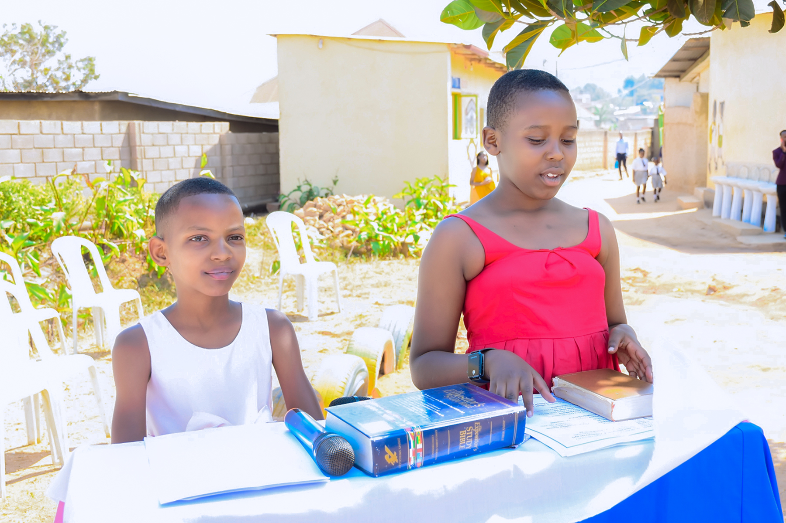

School Clubs
Learners take part in clubs that encourage creativity, teamwork, expression, and confidence while giving them opportunities to discover their interests and strengths.
Praise Academy helps learners grow beyond the classroom through clubs, service, cleanliness, leadership, sports, and school activities that shape confidence, discipline, and teamwork.
Our co curricular activities give learners space to discover talents, build friendships, serve the school community, and develop practical life skills alongside academic learning.
Learners take part in clubs that encourage creativity, teamwork, expression, and confidence while giving them opportunities to discover their interests and strengths.

Educational trips help learners experience practical learning, observe real-life examples, and connect classroom ideas with the wider world.

Performances and school presentations build communication, courage, self-expression, and joyful participation in school life.
Co curricular life at Praise Academy teaches learners to care for their school, respect one another, and contribute positively to the community through action and shared responsibility.
Through Umuganda, learners take part in keeping the school clean and beautiful while learning responsibility, cooperation, and care for the environment.
Sports activities help learners stay active, build discipline, enjoy teamwork, and grow in resilience and healthy competition.
Learners are given opportunities to lead, support one another, and practice discipline, respect, and responsibility within the school community.
We encourage a balanced school experience where learners grow through meaningful involvement in school clubs, community service, values-based programs, and collaborative activities.

Learners are guided in prayer, character building, and values-based participation that strengthens integrity, kindness, and discipline.
Group activities help learners cooperate, solve problems together, and build strong habits of participation and shared effort.

School events and celebration days give learners joyful opportunities to participate, express themselves, and strengthen belonging in the school family.